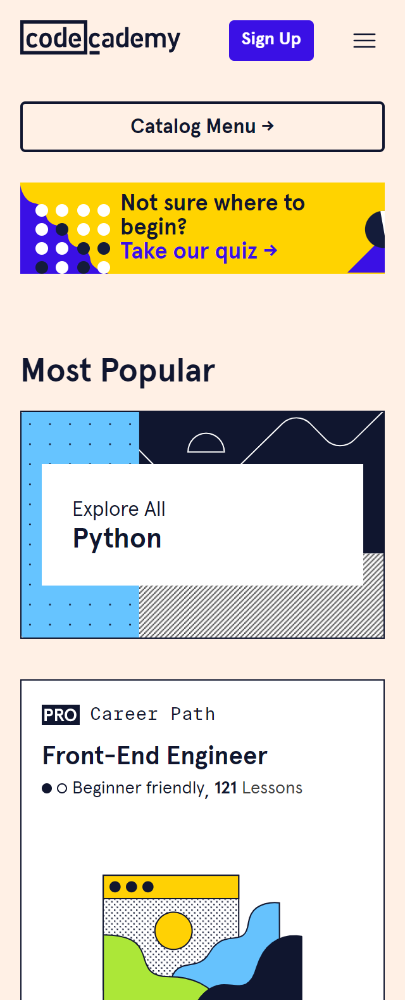

White Space
Apple
Everything is spreadout nicely and there is no overlap when switching the size of the screen
Visual Hierarchy
The Church of Jesus Christ of Latter Day Saints
When you open the page it is clear what the designer wants you to look at first and that is the article in the middle of the screen
Contrast
Codecademy
I find that this page has a good balance of using colors to contrast with the lighter background